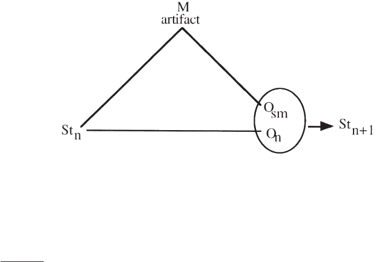
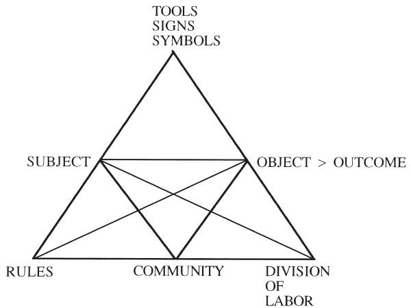
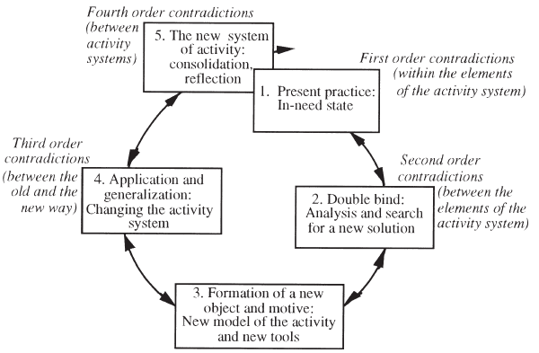
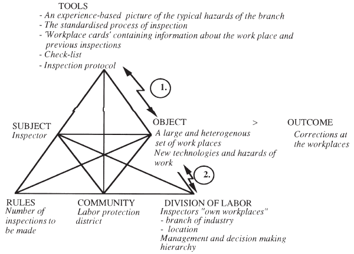
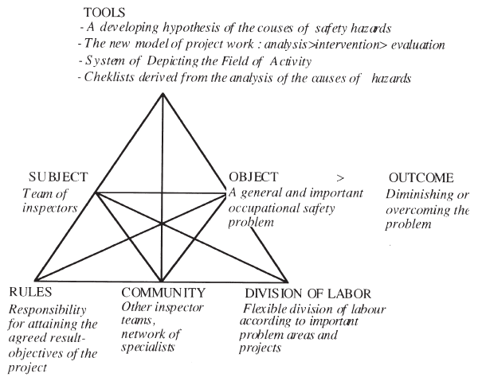
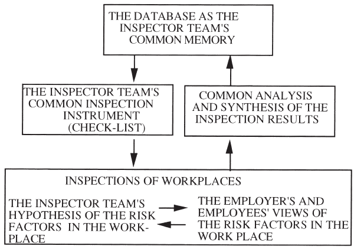

Accting., Mgmt. & Info. Tech. 10 (2000) 291–319
www.elsevier.com/locate/amit
Understanding organizational learning by
focusing on “activity systems”
Jaakko Virkkunen
a,*
, Kari Kuutti
b
a
Center for Activity Theory and Developmental Work Research, University of Helsinki, P.O. Box 47,
00014 Helsinki, Finland
b
University of Oulu, Department of Information Processing Science, Oulu, Finland
Abstract
This paper suggests that in order to understand relations between different aspects of organi-
zational learning, an appropriate unit of analysis and a concrete, historical approach is needed.
The units of analysis used in representative theories of organizational learning are first
reviewed and evaluated. “Activity system”, a concept that is based on Cultural Historical
Activity Theory, is then introduced as a potential candidate for a unit of analysis that makes
it possible to analyze the specific historical, local challenges and problems of organizational
learning and to direct a collective learning process. A case of organizational learning is then
presented by using a model of the activity system and Activity Theory-based intervention
methodology. Theoretical implications of the case are pointed out in discussion. 2000
Elsevier Science Ltd. All rights reserved.
1. Introduction
In the end of his broad review on the research on organizational learning, Huber
(1991) concludes that research has not been able to create any guidelines to increase
the effectiveness of organizational learning. After Huber, many other researchers
have expressed their frustration on the fragmented state of the theory and the lack
of practical value of the results of research on organizational learning (Pentland,
1995; Jones, 1995; Hendry, 1996; Tsang, 1997).
The inadequate state of research is not a problem for academic researchers alone.
Practicing managers, consultants and members of organizations increasingly face
* Corresponding author.
E-mail addresses: jaakko.virkkunen@helsinki.fi (J. Virkkunen), kari.kuutti@oulu.fi (K. Kuutti).
0959-8022/00/$ - see front matter 2000 Elsevier Science Ltd. All rights reserved.
PII: S0959-8022(00)00005-9

292 J. Virkkunen, K. Kuutti / Accting., Mgmt. & Info. Tech. 10 (2000) 291–319
problems in mastering organizational learning and transformations with the tra-
ditional conceptual tools of management (Robey, Wishart & Rodriguez-Diaz, 1995).
Stewart (1993) estimated a few years back the failure rate of business process re-
engineering efforts to be as high as 70%. Beer, Eisenstat and Spector (1990) found
in their study that organizational change programs fail astonishingly often. The frag-
mented state of theory carries over to prescriptions and intervention practices. Instead
of analyzing the specific demands of the situation, “most practitioners carry a ham-
mer and assume the presence of nails” (Edmondson, 1996).
Many attempts have been made to identify the root causes of the problems and
to show a way forward. The vagueness of the key concept “organization” seems to
be a major hindrance to progress (Schmidt, 1994). Researchers have tried to cope
with this problem in different ways. Some base their argument on mentalistic anal-
ogies of individual learning (see Huber, 1991; Dodgson, 1993; Jones, 1995). Others,
although speaking about “organizational learning”, focus on a more limited unit of
analysis within an organization such as a management team or an organizational
routine or then concentrate only on a specific aspect of the organization for instance
its corporate culture. Some writers propose that other concepts, such as “knowledge
system” (Pentland, 1995), “community of practice” (Brown & Duguid, 1991; Hen-
dry, 1996) or “activity system” (Blackler, 1993; Løwendahl & Haanes, 1997) should
be used in analyzing organizational learning.
In this article, we shall line up with those writers who are trying to find a more
fruitful unit of analysis for studying organizational learning. Because of the inad-
equacy of the basic concept, the research has produced insights about different mech-
anisms and obstacles of organizational learning, but not much knowledge about the
relationships between the identified mechanisms and obstacles. We find, however,
that there is another, even more fundamental cause for the lack of progress in the
research on organizational learning: the tendency to analyze the problem in univer-
salistic, ahistorical terms.
1
We maintain that organizational learning is a cultural
process which changes in the course of history. The activities in organizations, the
problems in realizing these activities, the possible means of solving the problems,
as well as the obstacles of learning, are historically specific. They are determined
by the local and historical form of the activity and the available cultural means of
solving the problems. We cannot proceed in understanding organizational learning
without analyzing concretely the historical development of both the problems to be
mastered, and the possible mechanisms of learning.
Even the fact that organizational learning has become a central problem in man-
agement and organization research is best understood from a historical perspective.
In the first half of this century, the development of organizations was realized largely
by applying the novel ideas of rational scientific analysis and planning, “scientific
1
There has been astonishingly little connection between the discussion and research on organizational
learning, on one hand, and the macroeconomic analyses of the ongoing change of economic conditions
or sociological studies of the ongoing cultural change and transformation of work (e.g. Hirschhorn, 1986;
Zuboff, 1988; Reich, 1991) or historical studies of organizational learning (e.g. Chandler, 1961; Hughes,
1979), on the other hand.

293J. Virkkunen, K. Kuutti / Accting., Mgmt. & Info. Tech. 10 (2000) 291–319
management”. This approach to developing activities stood in sharp contradiction
to the historically preceding craft type of experiential learning. In the literature of
organizational learning, we do not, however, find analyses of the remarkable tri-
umphs of organizational learning that was realized by applying the principles of
rational management. Organizational learning became a problem only when the limits
of the rational management approach began to emerge and managers and organiza-
tions failed when applying those principles.
The objective of this paper is to show how the concrete historical analysis can
help us understand the learning problems and effectively intervene in the learning
process. We shall make the following two claims:
1. Organizational learning is a multifaceted and multiphased phenomenon, a complex
interplay between different elements of a system. It cannot be studied by reducing
the scope to one or another element, but a minimal meaningful system as a whole
should be taken as the unit of analysis and intervention.
2. Organizational learning is always local and situational: structures, practices, habits
and ways of thinking in an organization are all shaped and produced in the histori-
cal development of that particular organization. Transformation from the current
situation to a new one cannot be done without a historical perspective.
2
We shall first analyze some prominent examples of the approaches used in studying
organizational learning and their underlying theoretical assumptions. We shall then
present a conceptualization based on the cultural historical theory of activity and
finally show, in a case example, how this theory can be used to explain and direct
a special kind of organizational learning called “expansive learning” (Engestro
¨
m,
1987; Cole & Engestro
¨
m, 1993).
2. Frameworks and concepts used in the analysis of organizational learning
2.1. The need for an integrating unit of analysis
One of the basic practices in science is to analyze a phenomenon by dividing it
into elements and by studying these separately. When dealing with a multifaceted
and dynamic phenomenon this approach, however, will easily lead to distortions. As
Vygotsky (1962, pp. 3–5) has pointed out, we do not learn anything about the qual-
ities of water, for example, its ability to extinguish fire, by studying separately its
constituent elements oxygen and hydrogen, the former of which is a necessary
element in all burning and the latter of which is an explosive gas. The proper unit
of analysis is the water molecule. Analogously, we should not hope to learn to under-
2
We believe that BPR’s need for a “clean slate” as the starting point is explained by the lack of
instruments in this approach to facilitate the transformation process (see Virkkunen, Kuutti & Young,
1997).
294 J. Virkkunen, K. Kuutti / Accting., Mgmt. & Info. Tech. 10 (2000) 291–319
stand organizational learning by analyzing separately individual learning and the
changes in institutional structures, cognitive changes and development of cultural
artifacts or incremental development and revolutionary transformations of organiza-
tions. This, however, is just what many of the theories in the field attempt to do.
In the next section, we shall describe the units of analysis as used by some theories
of organizational learning that we think represent the main approaches in the field.
By contrasting these different approaches we try to demonstrate the need for an
integrating unit of analysis.
2.2. Rational action approach: organizational learning as changes in
management’s assumptions
Amy C. Edmondson (1996) has analyzed the core of three theories of organiza-
tional intervention, which all ascribe organizational learning to changes in a manage-
ment team’s cognition. These theories are Edgar Schein’s (1990, 1992) theory of
corporate culture, Chris Argyris’ (1982, 1985) theory of interpersonal competence
and Peter Senge’s (1990) theory of systems thinking that is based on Jay Forrester’s
(1961, 1971) theory of system dynamics. Besides concentrating on the management
team’s cognition, these theories have a number of other common assumptions.
The theories focus on an obstacle of rational action and collective learning. For
Schein (1990, 1992, 1996) the obstacle is created by contradictions in the taken-for-
granted assumptions that are embedded in the deep, mostly unconscious layers of
corporate culture, or contradictions and lack of dialogue between the three occu-
pational cultures that meet in organizations: the operators’, engineers’ and managers’
cultures. For Argyris the obstacle is created by the governing competitive values of
organizational life that lead individual managers to adopt dysfunctional action stra-
tegies, which create defensive communication and prevent collective learning. For
Senge and Forrester the obstacle is the managers’ inability to understand complex
systemic relations and mediated, long term effects of their decisions. All these
theories also assume a set of factors that prevent the actor from becoming aware of
the counterproductive nature of their taken-for-granted cognition. According to the
theories, once the obstacles of rational discussion and learning are recognized and
removed, the managers and the whole organization will begin to act more rationally
and learn effectively.
Schein’s, Argyris’ and Senge’s approaches focus on cognition leaving the adminis-
trative structures, as well as tools and other artifacts used in the activity, outside the
analysis. For Schein and Argyris organizational learning is a result of the quality of
the managers’ interaction processes. These, they assume, can safely be analyzed and
developed without considering the content of the activity — a hypothesis that lacks
empirical substantiation (Kaplan, 1979). Forrester and Senge, on the contrary, see
the problem, not in the processes as such, but in the content: the managers have
false assumptions about the causal relations in the systems they try to manage
(Edmondson, 1996, pp. 578–582). Their intervention strategy also differs from that
of Argyris and Schein; they use models of the systems’ dynamics as tools for collec-
tive thinking and learning.
295J. Virkkunen, K. Kuutti / Accting., Mgmt. & Info. Tech. 10 (2000) 291–319
2.3. Behavioral framework: learning as refinement of routines
Economists’ early conceptualizations of organizational learning were based on the
idea of learning by doing and the concept of the learning curve (Arrow, 1962; Yelle,
1979; Epple, Argoyte & Devadas, 1991), which seem to take the production process
implicitly as the basic unit of analysis. The analysis focused on the improvements
in the production parameters (unit costs, amount of errors, etc.) as a function of time
of the production or the number of units produced. The mechanisms of learning in
production were not studied.
Levitt and March (1988) have elaborated upon this idea. On the basis of behavioral
studies of an organization, they maintain that, contrary to the rationalistic theories,
action in organizations stems from a logic of appropriateness or legitimacy more than
a logic of consequentiality or intention; it is based on historically formed routines that
are incrementally developed. Organizations learn by encoding inferences from his-
tory into routines that guide individuals’ behavior. The experiential lessons of history,
won through trials and errors and conscious search for better solutions, are preserved
in the routines. The routines are transmitted to new individuals through socialization.
These learn the routines, but not necessarily the historical causes of their specific
form.
Levitt and March seem to capture the special organizational nature of the learning
processes they study with the concept of routine. The concept incorporates both the
material and non-material cultural artifacts used in realizing the “routine”. It explains,
in a natural way, how experience and knowledge are preserved and transferred to
new individuals. It does not, however, help us to understand the purposeful, cooperat-
ive learning activity neither does it explain the deep qualitative changes and trans-
formations of routines. This, we think, is due to the lack of clarification of the interac-
tion between the actors, the routine and the objects processed in the routine as well
as the outcome of the routine. We agree with Levitt and March in their critique
against the rationalistic theories of organization, but we think that by criticizing the
simplistic rational models they fail to give proper attention to the social meaning of
the routines and the values created by them.
2.4. Organizational learning as a process in “communities of practice”
The search for the “best practices” has also directed the discussion of organiza-
tional learning to the search of universal mechanisms and solutions, independent of
content and local contingencies of learning. The new findings concerning the nature
of knowledge and learning have, however, emphasized the local and embedded nat-
ure of learning processes (see Blackler, 1993; Brown & Duguid, 1991; Tyre & von
Hippel, 1993). These findings show the limits of the best practice approach and pose
the practical question: how can managers and consultants direct the learning and
development processes if there is no best practice to follow?
John Seely Brown and Paul Duguid find that organizations comprise of several
“communities of practice” that often cross the formal boundaries of organizational
units. They argue that organizational learning should be studied by analyzing how
296 J. Virkkunen, K. Kuutti / Accting., Mgmt. & Info. Tech. 10 (2000) 291–319
these networked communities of practice create new insights, and learn (Brown &
Duguid, 1991). The actual learning in the practice differs remarkably from what the
managers and planners of personnel training seem to assume. Brown and Duguid
base their argument, to a great extent, on Orr’s (1990) ethnographic research on
copier repairer’s work. Orr found out that the official algorithmic prescriptions for
the work, instead of helping the repairers to do their work, in some cases, made it
more difficult. The official directives and training depicted the work as straightfor-
ward and simple, while in fact it was complex and demanding. To compensate the
inadequacy of the official prescriptions and to master the work the repairers relied on
each other’s experiences, which they shared and preserved in the form of case stories.
As a unit of analysis, the concept “community of practice” has partly the same
elements as the concept of “routine”. There are, however, some important differ-
ences. Brown’s and Duguid’s concept focuses attention on the actors’ actual interac-
tions and the ways in which the practitioners in the community of practice master
collectively a task by transmitting knowledge and experiences to its members. The
concept of routine, as Levitt and March describe it, does not emphasize the mastery
of the task. The “community of practice” brings the actors more prominently in the
picture and focuses attention on the work at the grass root level. The official way
of conceiving the “organization”, is problematized: the relevant cooperative relations
do not follow the organization chart. The identification of the community of practice,
the subject of learning, is for Brown and Duguid an empirical question.
Despite its merits, Brown’s and Duguid’s concept has the same fundamental limi-
tation as the concept of routine. The concept does not help us understand, why a
community of practice exists in the first place, or why communities of practice some-
times break up or transform radically. In stressing the inadequacy of the official
directives and the creative problem-solving in the community of practice, Brown
and Duguid fail to see that Orr’s study has depicted a historically specific form of
interaction between the planners and doers and a historically specific mediating arti-
fact used in this interaction, the algorithmic prescription. Because of this, they see
the experiential learning in the community of practice as the only possibility for
learning, and do not consider the possibility of any alternative, more fruitful forms
of interaction between the planners and doers. They do not consider the possibilities
for a creative dialogue between abstract and concrete thinking, which, for instance
Ikujiro Nonaka (1988, 1991) sees as the crux of organizational learning. According
to Nonaka, the dialogue between the top management’s abstract, visionary concepts,
and the experience-grounded concepts originating on the shop floor, is essential for
organizational learning. He stresses the central role of the middle management as a
mediator between these two perspectives.
2.5. Organizational learning as knowledge processing
Organizational learning has also been studied as a system of social knowledge
processing (see Pentland, 1995; Boisot, 1995; Dixon, 1994; Huber, 1991; Leonard-
Barton, 1995; Nonaka & Takeuchi, 1995). One of the most interesting attempts is
297J. Virkkunen, K. Kuutti / Accting., Mgmt. & Info. Tech. 10 (2000) 291–319
made by Nonaka and Takeuchi (1995) who propose a theory of cycles of knowl-
edge production.
Nonaka’s and Takeuchi’s theory is based on a matrix of conversions from tacit
to explicit and explicit to tacit knowledge. The cycle of knowledge creation begins
with socialization, the sharing of tacit knowledge. The next phase is the construction
of explicit concepts by externalizing the tacit knowledge. After that, systemic knowl-
edge is created by combining and ordering conceptual knowledge. Finally, the cre-
ated new knowledge is internalized and converted into operational knowledge. In
complex processes such as development of new products, this cycle is repeated over
and over again.
The framework proposed by Nonaka and Takeuchi directs our attention to the
socially constructed, distributed and embedded nature of knowledge and the pro-
cesses through which it is created and developed. Thus the knowledge process frame-
work helps us to focus on the “organizational learning” proper, that is, on the collec-
tive, social processes of learning. On the other hand, however, it also alienates us
from it. Organizations are not basically knowledge systems, but systems that produce
something of value to the society. The knowledge-process framework does not expli-
cate and explain the relation of knowledge processes to the productive processes in
the organization; why and what kind of knowledge is needed in the productive pro-
cesses and their management, and how the knowledge is created and used in these
processes. Nonaka and Takeuchi describe the knowledge creation process in product
development after a decision has been made to develop a new product. Their theory
does not explain how a need for creating new knowledge emerges in the first place,
and how a problem is identified. Only when the knowledge-creation process is set
into the context of an organization’s activities, does the understanding of the knowl-
edge processes help us understand organizational learning.
Instead of basing the knowledge creation cycle on the transformations of knowl-
edge along the epistemic (tacit-explicit) and ontological (individual-collective)
dimension as Nonaka and Takeuchi do, we suggest that the cycle should be based
on phases of problem identification, solution generation and application, and the
generalization of the solution in practical activity. In these phases, the cognitive
content is typically represented in different combinations of tacit and explicit, indi-
vidual and collective elements (Engestro
¨
m, 1996).
2.6. Evaluation of the conceptual tools used for analyzing and enhancing
organizational learning
Even though the managers’ cognition, the incremental change of processes, the
cooperation and exchange of experience in communities of practice, as well as the
sociocognitive processes and the cooperative knowledge creation in the social knowl-
edge processes, are all important aspects of organizational learning, we maintain
that the relationships between these explanatory principles remain obscure without
a cultural historical approach. This kind of approach would also elucidate the
relationship between the learning processes that operate in the incremental develop-
ment of routines and the learning processes that operate in the radical, qualitative
298 J. Virkkunen, K. Kuutti / Accting., Mgmt. & Info. Tech. 10 (2000) 291–319
transformations of the organization (Bartunek, 1988; Geresick, 1991) as well as the
relationship between learning and obstacles to learning. To better understand these
relationships, we have to focus more on the dynamics of learning. For this we need
a theoretical concept and a systemic unit of analysis that allows us to analyze the
relationships between different elements in human activity.
In the next section, we shall introduce an alternative concept for the unit of analy-
sis and intervention called “activity system”, based on Cultural Historical Activity
Theory (CHAT), and we shall outline the main features of an alternative approach
to collective learning, Developmental Work Research (DWR), which focuses on a
new type of learning characterized as “expansive learning”. After introducing the
basic concepts and principles of the theory and the intervention method, we shall
describe a case of expansive learning in a state agency. With the case example, we
aim to illustrate that by using the “activity system” as the unit of analysis and a
concrete historical approach, some problems plaguing the main approaches to organi-
zational learning can be avoided or alleviated.
3. Cultural historical activity theory
3.1. Cultural mediation of human activity
The cultural historical theory of activity is a crossdisciplinary theory about human
activity. The initial ideas of CHAT were formulated in 1920s and 1930s by a group
of Russian psychologists who felt that traditional psychology was not able to describe
the relationships between the individual and the society adequately or to account for
the historical development of psychological processes.
3
They maintained that the
practical, productive interaction with the world has a pivotal role in the formation
of the psychological processes. These interactions are culturally mediated in the sense
that humans use concepts and tools that the society has developed during its history.
The cultural mediators individuals use, carry with them the experiences of other
human beings, past and present, and the history of human practice.
4
They also carry
the typical intentions and objectives of people in a specific situation. Cultural artifacts
emphasize those aspects of the object that are relevant to a social practice. The
subject does not perceive the given thing or process as such, but as a culturally
determined object of activity, as material for producing something, as a specific
problem to be solved, etc. Man projects cultural meanings onto the object and sees
also the potential outcomes that can be produced by transforming the object with
3
The original foundation of Activity Theory was laid by L. S. Vygotsky during the 1920s and early
1930s as a cultural-historical school of psychology. His work was continued by A. N. Leont’ev and A.
R. Luria, who developed his ideas further and started to use the term “activity”. A good historical review
of that development can be found in Leont’ev (1989).
4
An example of this is the “QWERTY” — order of alphabets in our computer keyboards. The imprac-
tical order was developed to prevent jamming of the mechanical keys of the first typewriters
(Poto
´
snak, 1988).

299J. Virkkunen, K. Kuutti / Accting., Mgmt. & Info. Tech. 10 (2000) 291–319
the available tools. Higher psychological processes are not biologically given, but are
formed while individuals internalize what first existed externally as a social practice.
Language is an integral part of the overall process of cultural mediation, the tool
of tools. The notion of tool mediation is double-sided; what we conventionally call
tools and what we call symbols are two aspects of the same phenomenon. Mediation
through tools is more outwardly oriented, mediation through signs is more inward
oriented, but both aspects adhere to every cultural artifact.
Human beings constantly synthesize the two worlds, the directly given and the
culturally mediated, to provide the mental foundations of their real-time actions in
the world. New states of the subject arise from the coordination of information from
the mediated and the direct connections between the subject and the object. The
basic structure of human cognition that results from tool mediation is pictured in the
triangle of Fig. 1.
For example, a medical practitioner perceives the appearance of a patient who
comes to see him, and in examining the patient, gets more direct perceptions (the
line S–O in Fig. 1 represent this, S being the practitioner and O being the patient).
On the other hand, the doctor uses the concepts, theories and disease categories of
medical science as well as a set of research methods and instruments when studying
the patient. The coordination of the immediate perceptions and the perceptions cre-
ated through the mediation of these artifacts — say the measurement of blood press-
ure (line S–M–O in Fig. 1) — leads to a diagnosis of the patients disease and a
corresponding picture of treatment possibilities (St
n+1
in Fig. 1).
5
Fig. 1. A model of the basic mediational structure. (S) subject, object (O), and medium (M) at the
vertices of the triangle indicate the basic constraints of mind. The line S–O represents the “natural”,
(unmediated) functions, the line S–M–O represents the functions where interactions between subject and
object are mediated by auxiliary means. St
n
is the subject’s state of knowledge at time n; Osm is the
object as represented via the medium; O
n
, object at time n;St
n+1
, emergent new state of the subject’s
knowledge at time n+1 (Cole and Engestro
¨
m, 1993, pp. 5–7).
5
CHAT is not the only theory that emphazises the culturally mediated nature of human activity. The
“Actor Network Theory” analyzes the various processes of mediation in humans’ interaction with each
other and with nature (Latour 1993, 1994). The main difference between CHAT and ANT is the former’s
emphazis on the intentional nature of human activity. (For a comparison see Miettinen, 1999.)

300 J. Virkkunen, K. Kuutti / Accting., Mgmt. & Info. Tech. 10 (2000) 291–319
Human development can be seen as a process of remediation, the substitution of
old mediating artifacts with new artifacts which serve better the needs of the activity
concerned. Remediation means that the external objects are seen in a new context,
interpreted in a new way. Because the mediating artifacts are both signs and tools,
remediation does not only mean conceptual reframing of the object of the activity
(see Bartunek, 1988), it also means that the object is acted upon in a new way, that
the interaction between the subject and object, as well as both the anticipated and
the real outcomes of that interaction change.
3.2. The new unit of analysis: “activity system”
According to A. N. Leont’ev (1978), human activity has a hierarchic structure.
Individuals’ actions are always situated in the context of a historically developed
collective praxis, an activity system. In Fig. 2, the model of individual action in Fig.
1 has been complemented to depict the collective activity system. The model looks
at the activity from the point of view of one actor, the subject, but the fact that
subjects are constituted in communities is indicated by the point in the model labeled
“community”. The relations between the subject and the community are mediated,
on one hand, by the groups’ full collection of “mediating artifacts” and, on the other
hand, by “rules” that specify acceptable interactions between members of the com-
munity, and “division of labor”, the continuously negotiated distribution of tasks,
powers and responsibilities among the participants of the activity system (Cole &
Engestro
¨
m, 1993, p. 7).
Fig. 2. A general model of an activity system.
301J. Virkkunen, K. Kuutti / Accting., Mgmt. & Info. Tech. 10 (2000) 291–319
Due to the division of labor, the relation between the outcome of the whole activity
(the value created) and the individuals’ actions becomes indirect and mediated.
Leont’ev (1978) explains the relation between individual actions and collective
activity with an example about primitive hunters who, in order to catch a game,
separate into two groups: the catchers and bush-beaters frightening the game towards
them. When compared with the motive of hunting — to catch the game to get food
and clothing material — the individual actions of the bush-beaters are irrational;
they can be understood only as parts of the larger system of the hunting activity.
When activities become institutionalized, they are rather strong and enduring.
6
For
instance, the practice of a medical doctor is stabilized by the specially planned prem-
ises, the expensive instrumentation, the special training system, legal and professional
rules of the professional’s conduct, etc. The established activity system directs the
individuals’ actions. On the other hand, the different components of the system
change and are constantly renegotiated (Engestro
¨
m, 1991).
The key element of an activity system is the object of that activity. The object is
the societal motive of the activity, it defines the activity and separates activities from
each other. The object can be a material thing, but it can also be less tangible (like
a plan) or totally intangible (like a common idea) as long as it can be shared for
manipulation and transformation by the participants of the activity. Contrary to indi-
viduals’ actions, which have a clear and finite objective, the object of an activity is
never finite and exactly determined. It can be better characterized as a horizon of
possibilities and possible objectives for the actors, something that unfolds in the
process of the activity.
Each individual taking part in a common activity has a slightly different view and
interpretation of the object and purpose of the activity depending on the individual’s
position in the division of labor, his or her history in the activity, training and experi-
ence etc. Thus, the activity system is always internally heterogeneous and “multi-
voiced”. There are many competing and partly conflicting views. Even though some
individuals are more powerful and central in the collective activity no one individual
can completely impose his or her view to the other persons taking part in the activity.
That is why no view should be taken a priori as privileged, “right” or an official
view when analyzing the activity. Instead, the historical development of the activity
and its object as well as the types of interpretation can be described.
The outcome of an activity will become a part of another activity system: an object
to be further transformed in the “value chain”, a subject (the outcome of a training
activity), a tool, a rule etc. There is always a network of functionally linked activity
systems. The links between activity systems are determined by the objects and out-
comes of the activities in the network. In the network around the “central” activity
to be analyzed, there are typically such activities as the object or client activities, rule
producing managerial or administrative activities and instrument producing activities.
6
CHAT emphasizes the institutionalization of social interaction very much like the institutional theory
of Berger and Luckmann (1966/1987). CHAT differs from the social construction approach in its emphasis
on the object orientedness of human activity and the central role of artifacts. The explanation of social
change by inner contradictions of activity systems is also original to CHAT.

302 J. Virkkunen, K. Kuutti / Accting., Mgmt. & Info. Tech. 10 (2000) 291–319
From the point of view of activity theory, “organizational learning” manifests itself
in qualitative changes in an activity system. It is not an aggregation of individuals’
learning to perform certain actions. The collective learning is different in different
phases of the qualitative change of an activity system. In some cases, the change
process can proceed if individuals learn to perform new types of actions. In some
phases, it presupposes an analysis and realization of the causes of the problems in
the system. In some cases, it presupposes the creation of innovative new forms of
activity and new artifacts, etc. When the object of the activity is reinterpreted, and
the actors’ interaction with the object is remediated to the effect that the object of
the activity expands, we can speak of “expansive learning” (see Engestro
¨
m, 1987).
A variety of different forms of learning is typically needed when an organization
goes through a cycle of expansive learning.
3.3. Dynamics of change and expansive remediation in the activity systems
The dynamic forces of change and learning in the activity are explained in the
theory by contradictions within the activity system. Contradictions are fundamental
tensions and misalignments in the structure that typically manifest themselves as
problems, ruptures, and breakdowns in the functioning of the activity system. Differ-
ent levels of contradictions can be identified, depending on their positions in the
network of activities. The actors try to remove these disturbances by changing and
developing the cultural mediators of the activity.
DWR assumes that the historical development of activity systems proceeds in the
cycles of emergence, transformation and solving of inner contradictions within the
activity system, as depicted in Fig. 3 (Engestro¨m, 1987, p. 189). When the compo-
Fig. 3. The phases of the cycle of expansive transition and learning (the two-ended arrows indicate that
the progress through the cycle is not deterministic but can oscillate between phases, be blocked or degener-
ate back to an earlier state).
303J. Virkkunen, K. Kuutti / Accting., Mgmt. & Info. Tech. 10 (2000) 291–319
nents of an activity system begin to misalign, due to internal and external develop-
ment, the activity begins to loose its clear direction. The amount of disturbances and
problematic situations increases, and there is a rising need for change that is not yet,
however, clearly focused. There is an increasing, diffuse discontent which is more
often directed to individuals than toward the structural features of the activity system.
If the components of the activity system change substantially and misalign, contra-
dictions between the components will emerge and aggravate. For the individuals
taking part in the activity this means “impossible tasks”, stress and failure. The
dissatisfaction begins to focus on specific parts of the activity, but there seems to
be no acceptable way out. For instance, new technology that has been adopted causes
many disturbances and problems, but, it is impossible to return to the old technology.
The double-bind experience is the psychological counterpart of the contradiction
between the parts of the activity system.
To overcome a double-bind situation, an analysis of the situation and of the contra-
dictions, as well as the search for alternatives, is called for. The analysis serves a
basis for planning a solution to the contradictions in the present praxis. To overcome
the contradiction, the object and the purpose of the activity — what is produced and
why — has to be reinterpreted and reconstructed in a wider perspective. The new
view of the object and purpose creates the perspective and motivation for change.
In this phase, new tools, new division of labor and new forms of cooperation to
realize the new way of working are also being planned.
The change begins often with experiments on the most important parts of the new
solution. The qualitative change generalizes gradually to the whole activity system
if the produced innovations help to overcome the acute contradictions in the activity
system. Adopting new tools and practices creates contradictions between the old
practices and the new ones. These contradictions are manifested in new kinds of
problems, ruptures and disturbances in the activity. The contradiction between the
old and the new ways of acting affects also the way these problems are solved.
There is a constant tension between the expansive, future oriented solutions and the
regressive ones that would mean return to the old practices. The solutions to the
problems gradually give form to a new practice which may eventually be quite differ-
ent from the planned model of the new activity.
If the new practices are successful, they will be gradually routinized and new
unofficial social practices and forms of cooperation as well as concepts and ways
of thinking evolve around them. On the other hand, during this phase, the actors
meet with difficulties and problems in their cooperation with the neighboring activi-
ties. The dynamics of change is no longer so much the contradiction between the
new and old ways of working within the activity system, as the contradiction between
the actual new practice and the old expectations of the representatives of the neighb-
oring activities.
The phases of a development cycle do not, however, follow each other automati-
cally. On the contrary, the phases represent possibilities that can be realized through
active development work and conscious learning activity. In many cases, the actors
build individual and collective defenses in order not to have to encounter the contra-
dictory demands of their situation and thus make problem identification and problem
304 J. Virkkunen, K. Kuutti / Accting., Mgmt. & Info. Tech. 10 (2000) 291–319
solving difficult. The development can also be hampered because the actors cannot
develop an agreeable solution to the contradictions or do not recognize the systemic
and collective nature of their problems and try to manage the situation by individ-
ual solutions.
4. Expansive transition in a labor-protection inspector’s work
4.1. The historically developed activity system
In Europe, it is common that there is state legislation and norms concerning the
work conditions and safety in work. In Finland, the enforcement of labor protection
legislation is in the hands of eleven district authorities. The Ministry of Health and
Social Welfare (formerly the National Board of Labor Protection) supervises the
enforcement work. It also issues instructions on working conditions, machinery, and
equipment, runs labor protection training and promotes publicity on labor protection.
The main form of activity of the labor protection districts is the inspection of
working premises, which is done by labor-protection inspectors. The purpose of their
work is to ensure that the labor protection regulations are being observed and to
advise on improvements of working conditions and safety. The inspectors give speci-
fied instructions aimed at eliminating defects and hazards. If this is insufficient, they
can order the employer to remedy the defect within a given period of time and under
threat of a fine if necessary. In extreme cases, an inspector can order a complete
halt to operations or demand that work with a specific site, machine or method be
discontinued. The inspectors typically have college level technical training and/or
background as labor protection managers or labor protection delegates in industry.
The National Board of Labor Protection set in 1989 a project to develop the work
forms of the inspectors. The first author of this article (later in the text referred as
the consultant) was invited to act as a consultant and specialist in the developmental
work research method in this process. In the beginning of the project a task force
group of inspectors was set to analyze the historical development of labor inspectors’
work in order to recognize the historical roots of the present-day practices and to
identify contradictions within the inspectors’ current activity system.
The inspector group found three historical periods of development of their activity
system. During the first period from 1889 until the 1970s, the object of the inspection
work was heavy industry and especially dangerous work places. Each inspector
inspected his or her “own” industrial workplaces once a year. The second period
began after a very intense period of industrialization in the early 1970s. The amount
and versatility of industrial workplaces had increased and a new law extended the
labor protection control from industrial workplaces to all work places. The protection
activity was reorganized and new specialized personnel was hired. The amount of
work places to be inspected was so great that, in spite of the increased number of
inspectors, all workplaces could not be yearly inspected any longer.
During the second development period from the early 1970s to the mid 1980s,
the work remained individual, but the protection activity got new traits of functional
305J. Virkkunen, K. Kuutti / Accting., Mgmt. & Info. Tech. 10 (2000) 291–319
bureaucracy. Work places were distributed between the inspectors according to the
branch of industry. The district organization was divided into specialized sections.
The National Board of Labor Protection issued detailed instructions for the inspectors
and tried to standardize the inspection procedure and develop strategic planning of
the activity. A broad analysis of labor protection problems in Finland and a program
of national labor protection projects to eliminate common causes of accidents and
work originated illnesses was planned. The Board also issued statements of priority
to focus the inspectors’ work on important areas. The project work did not, however,
develop because of the inspectors’ individual way of working and the division of
labor, which meant that each inspector was responsible for “his or her own workplac-
es”.
The third development period began gradually in the 1980s. During the 1980s,
the optimism of the reform work of the previous phase was lost and there was grow-
ing awareness and discussion that by making surveys in work premises the inspectors
cannot get an overall diagnostic picture of the safety situation and influence the real
causes of defects and hazards. During the inspections, the inspectors observe single
defects, but not the causes of the defects, and even this is not very effective, because
many of the defects and hazards can only be noticed under exceptional situations.
On the other hand, the inspectors complained that the same, often trivial defects
appeared repeatedly in spite of the instructions given.
4.2. Hypothesis of the inner contradictions of the inspectors’ activity system
On the basis of the historical analysis, the consultant prepared the following model
of the inspectors’ activity system and its inner contradictions in the late 1980s.
According to the model, the individually working inspector (Fig. 4) has a great
and heterogeneous amount of workplaces to inspect, and he or she meets at the
workplaces complex novel technologies and new types of hazards. The inspectors’
tools for analyzing these are the directives, regulations, and instructions issued by
the Ministry and the National Board of Labor Safety, each inspector’s own, experi-
ence-based picture of the safety hazards typical to the branch as well as the standard
procedure of inspection. These tools were increasingly inadequate in view of the
amount of work places and the changing nature of safety problems (contradiction 1
in Fig. 4). The division of labor, in which the inspectors work as individuals and
are responsible for a fixed set of their “own” work places, makes this problem even
more acute (contradiction 2 in Fig. 4).
The consultant suggested to the inspectors the hypothesis that the inner contradic-
tions depicted in the model were both the root causes of the disturbances, ruptures
and problems of their daily work and obstacles of collective learning. To test this
hypothesis he videotaped ten actual inspections and interviewed all those that took
part in the inspection processes. The National Board of Labor Safety organized small
groups of inspectors to look at the videotaped inspections and analyze the disturb-
ances and ruptures as well as innovations in the processes. The inspectors taking part
in the analysis had full transcripts of the discussions and protocols of the interviews at
their disposal. The inspector groups classified the disturbances and ruptures in the

306 J. Virkkunen, K. Kuutti / Accting., Mgmt. & Info. Tech. 10 (2000) 291–319
Fig. 4. Labor protection inspectors’ activity system and its inner contradictions before the change in
the late 1980s.
process they found by using the model of their activity system depicted in Fig. 4.
Most of the found disturbances and ruptures seemed really to be caused by either
the inadequacy of the inspectors’ tools or by their division of labor, i.e. the contradic-
tions found in the historical analysis. The analysis helped the inspectors begin to look
critically at the activity system they had inherited from previous practice. Instead of
blaming themselves or each other for the difficulties and trying to justify themselves,
they began to focus their attention on possibilities to develop their tools and their
division of labor.
4.3. Developing a vision of the future activity system
The results of the analysis and the possibilities of developing the inspectors’
activity system were discussed in a seminar. A recurrent theme in the seminar was
the need to be able to prioritize the alternative objects of inspection and to concen-
trate the work efforts in the most severe problems. The inspectors felt that they
needed a new instrument to overcome the contradictions of the activity system (see
Fig. 4). That instrument should enable them to identify important general safety
problems, analyze their causes and plan an intervention to change the situation. The
analysis of, and intervention in important general safety problems would be realized
by flexibly-set teams of inspectors in accordance with the safety problem areas that
the overview showed to be the most urgent. Several ideas for a new instrument that
would allow the inspectors to be more selective were presented.
The consultant summed up the discussions in a model of the inspectors’ future

307J. Virkkunen, K. Kuutti / Accting., Mgmt. & Info. Tech. 10 (2000) 291–319
activity system. The first draft for the model of the future activity system was then
developed in many discussions. The final form in which all the components of the
activity system would be changed to match the change of the object of the activity
is presented in Fig. 5.
4.4. Changing the activity in the Uusimaa Labor Protection District
In 1990 The National Board of Labor Protection set a project to develop that new
instrument for the planning of inspection activities of a labor protection district. The
project was realized in the Uusimaa labor protection district where the new instru-
ment was also first taken into use. The new instrument was called the System for
Depicting the Field of Activity (SDFA). It was based on a three-level depiction
which allowed the “zooming” of important areas of interest. First the project made
a general statistical description of the labor hazards in different branches of industry
and in different trades. This was the first level of the system. Its purpose was to
define a set of important problem areas for a more detailed analysis. The second
level of description aimed at analyzing the causes of labor hazards. The idea of the
project group was that the third level would be a plan of intervention to remove the
identified labor safety problems.
One of the major problem areas, according to the first level analysis, was the
construction industry. The relative amount of deaths at work, severe work accidents,
occupational diseases and early retirements due to invalidity was one of the highest.
Fig. 5. The future vision of the inspectors’ activity system.
308 J. Virkkunen, K. Kuutti / Accting., Mgmt. & Info. Tech. 10 (2000) 291–319
In 1991, the labor district set an inspector team to locate the types of workplaces,
phases of work and trades in construction work where risks were the greatest and
to analyze the causes of the risks. The team also had to develop the structure for a
database for the second level of the system of depicting the field of activity (the
SDFA).
The object of work of the newly set inspector team was, in this case, the totality
of different construction work activities within their area. The team analyzed and
described the given construction workplaces and — activities from various points
of view. They collected statistics of hazards according to
— construction activities classified according to the project type: land construc-
tion, housing, prefabricated house production, roofs, plumbing, etc.
— different trades and occupations in the construction branch
— construction firms
— construction activity classified according to contract form
— the firm’s relation to the contract (main contractor, subcontractor, etc.).
This gave the team an opportunity to locate the most dangerous areas and to begin
to analyze the causes of the hazards.
After having established the basic structure of the database, the team began to
collect data. The idea was to collect data of construction firms and trades in the
district’s area. Therefore, a specialist from the Confederation of Finnish Construction
Industries and a labor safety manager and a workers’ labor protection delegate from
a large construction firm were invited to take part in the work. The work aroused
interest in these organizations and a new type of network of cooperation began to
develop. These contacts also gave the group access to information that was not avail-
able in public statistics. The team analyzed all the available research results on labor
safety in construction, as well, and put the findings into a database. To do this, the
team had to build contacts to researchers.
The team collected the information first manually, but it soon became evident that
the amount of data was too large to be processed in that way. Consequently, one of
the members of the team developed an electronic database using the database features
of the Excel spreadsheet program. All the collected information was accessible to
the members of the team and it was easy to update the database.
When the first collection of information had been done, the team analyzed thor-
oughly the results with other inspectors working in the construction branch. They
set new inspection tasks and tasks for further analysis.
The team prepared a new instrument — a type of extended check-list — for the
inspections. They derived the items in the check-list from three sources. One third
of the items were derived from the collected data, one third from the inspectors’
experiences, and one third of the issues to be dealt with were established at the work
places during the inspection in a discussion with the representatives of the employer
and the employees about the most urgent work health risks.
The discussion about the most alarming health risks with the representatives of
the workplace turned out to be important. The inspectors, who realized the experi-

309J. Virkkunen, K. Kuutti / Accting., Mgmt. & Info. Tech. 10 (2000) 291–319
ment reported that these discussions gave them information about matters they did
not even know were there to be asked. The inspectors’ new approach turned the
whole inspection discussion into a dialogue, which it had not been before. Further-
more, the new procedure led the inspectors to pay attention to the differences of
opinion of the different actors at the workplace. The resulting hierarchy of tools and
the use of the database as a common memory is illustrated in Fig. 6.
Afterwards the deputy director of the Uusimaa Labor Protection District explained
in an interview that the joint preparation of a common inspection instrument, the
check-list, was very important. Each inspector had to interpret what the data collected
in the database meant in terms of the inspection work and relate it to his or her own
experience and previous thoughts about the causes of hazards. The inspectors also
began for the first time to compare systematically their experiences. Before, the
inspectors had occasionally had quite fixed opinions about the typical hazards. It
turned out that these opinions were not always very accurate and they could even
be systematically biased. The inspectors’ individual learning from work experience
turned out to have been partly superstitious. Now the constant analysis of the causes
of hazards and the testing of hypotheses led the inspectors to test and sharpen their
analyses of the causes of hazards. Planning the inspection instrument connected the
individual inspections to the larger context of the inspection project and the develop-
ment of the common database. Thus the inspectors had to think about the further
use of the information they collected in the inspections.
After having inspected the selected workplaces and collected data, the inspectors
summarized and analyzed the findings. These were also discussed with all the inspec-
tors working in the construction branch. In the discussions, inspectors made gen-
Fig. 6. The use of the new instrument, the second level database of the SDFA.
310 J. Virkkunen, K. Kuutti / Accting., Mgmt. & Info. Tech. 10 (2000) 291–319
eralizations of the findings and decided about further targets of the inspection work.
For instance, it was found that the occupational risks were often connected with the
bad quality of the scaffoldings used. The scaffoldings were often rented from equip-
ment renting companies that did not reassure the flawlessness of the parts of scaffold-
ing they delivered. Action was then taken to get these firms to improve their quality
control systems. It was also discovered that the forms of subcontracting contracts
were out-dated and did not take into account the new practices. This led the inspector
team to take initiative to change legislation and the control practices in subcon-
tracting. These examples show how the object of the inspectors’ work had changed.
Instead of working only with individual work places and their safety defects, they
now worked with the causes of these defects in a network of cooperating firms.
The common analysis of the results of the inspections and the use of the new
common tool made it possible for the management and the inspectors in the Uusimaa
District of Labor Protection to identify and describe the objects of work for the
inspector teams. After the first pilot team, similar teams of inspectors were set to
analyze urgent safety problem areas and to plan and execute interventions on them.
4.5. Generalization of the new form of activity and the second expansive cycle:
change of management activity
The development of the labor inspectors’ work led the management of Uusimaa
labor protection district into a crisis. The object of the management’s work had been
the supervision of a set of individually working inspectors. The new tool and the
new teams changed the object of management activity radically. The inspector teams
doing the new kind of work could not be managed according to the old division of
management work and with the old procedures of management. The problem areas
the teams worked on crossed the boundaries of the sections and the teams’ work
was much more explorative and creative than the traditional inspection work. This
change of the object of the management’s work was, however, only the “last straw”
that accentuated the deadlock of the old form of district management, which had
developed gradually over many years.
To solve the problem, the district manager started a management development
project. In the project, the managers reconstructed the history of the management
practices of the district. They recognized two former expansive transitions in the
management system. Up to the 1970s, the management of the district was part of
the chief inspector’s work. Besides his own inspection work, he supervised other
inspectors, who were regarded as his assistants. This “craft type” management system
got into a crisis in the mid 1970s when the amount of work places to be inspected
and the versatility of these increased, and more persons, in particular specialists
of the new branches of activity, were recruited. A bureaucratic, functional type of
management structure was built which functioned well until the late 1980s, when
once again the amount and versatility of work premises to be inspected increased
because the inspection of small firms was transferred from the local authorities to
the state and was given to the district.
Owing to the new instrument for depicting the field of activity, as well as the

311J. Virkkunen, K. Kuutti / Accting., Mgmt. & Info. Tech. 10 (2000) 291–319
great amount of working premises to be inspected, the management had begun to
see the object of their work in a new light. Instead of the traditional supervision of
the inspectors’ work according to a fixed division of labor, the district manager and
the heads of sections saw it as their task to identify important labor protection prob-
lems in the district’s area and to organize teams of inspectors to analyze the problems
and to make interventions to overcome the problems. The old fixed division of the
management’s work was in sharp contradiction to the new “management by priorities
and results” approach. This hypothesis of the inner contradiction in the district man-
agement activity system was tested by analyzing the disturbances, ruptures and
innovative solutions found in the process of preparing the activity plan for the next
year as well as in the management meetings.
7
The analysis showed that, indeed,
many of the everyday management problems could be attributed to this inner contra-
diction in the management activity system.
The next phase in the expansive transition was the search for a new solution. As
the managers were unanimous about the basic problem, the contradiction between
the object of the management’s activity and its division of labor, it was natural to
concentrate on looking for ways to overcome this contradiction. This was done using
a kind of prototyping method. The managers, together with some representatives of
the personnel, first considered what other possibilities there might be in defining the
object of the management’s work. After this exercise, the possible principles that
could be used to divide management work were studied. Three alternative interpret-
ations of the object of the managers’ work and three different principles of division
of management work were combined in a matrix to produce nine different solution
alternatives. In a seminar, the managers and representatives of personnel discussed
thoroughly the pros and cons of all the alternatives (examples of most of the solutions
could be found in real life, either in the history of the district, or in some of the
other districts or in foreign countries).
The managers came to the conclusion that the future management system would
be based on two basic ideas: team based project inspection, and result-unit organiza-
tion. These two ideas were not entirely compatible. Further qualifications were
needed for the concept of “result unit”. The generalization of the project based
inspection system had turned out to be problematic. The inspectors had realized that
it is very difficult to combine the client service that demanded quick reaction to
customer impulses with the more proactive and self regulated project work. No
inspector, on the other hand, wanted to specialize altogether in client service. It was
decided that one of the result units would be the client service unit, and that all the
inspectors would work there for a period each year. The other result units would be
“programs” of related projects. In the further elaboration of the management struc-
ture, each of the four newly appointed unit heads also got responsibility for
7
One of the officials interviewed all those who took part in the planning process and identified disturb-
ances and ruptures in the process. The data was presented to the management team. The consultant
videotaped a meeting of the management team and meetings of the sections and selected samples of the
videotaped meetings to be analyzed together with the managers. The managers then analyzed the meetings
to identify typical disturbances and ruptures in the process of joint planning.
312 J. Virkkunen, K. Kuutti / Accting., Mgmt. & Info. Tech. 10 (2000) 291–319
developing new management tools for one central process; these being the
cooperation in client service, the management by results process, the development
of strategic analysis and the development of the inspectors’ skills and inspection
methods.
The management system was formally changed in January 1994. 1994 was a year
devoted to changing the practice. In September 1994, the district arranged an evalu-
ation seminar for the management and the representatives of all inspector teams. In
the seminar discussions, it became clear that the new flexible organization resulted
in both enthusiasm and anxiety among inspectors and that there were strong conflicts
between the old and the new systems and also between the supporters of the old
and supporters of the new way of working. Many of the inspectors expected the new
form to be as permanent as the old had been. Only after many discussions was it
commonly realized that the organization was changing all the time and part of the
work was to discover and develop constantly better new ways of doing things. The
new organization and circulation of inspectors in the client service had revealed how
unevenly the inspectors’ occupational skills had developed while the inspectors had
been devoted only to their own work places and problems encountered there. After
the reorganization, the management analyzed and reengineered all the client service
processes, which each inspector had formerly realized in a more or less individual
way, and started a training program to even out the levels of knowledge and mastery
in the basic competencies.
Even though the management had believed that they were already moving from
supervision to a more strategic form of management, the new object of management
work became a collective reality only after the change of management tools and the
division of management labor. Despite stressing the individual managers’ responsi-
bility, the change actually led the managers to work increasingly as a team. This
resulted from the fact that they had a new common object of their management
activity: the change process they had started.
The new SDFA tool was the key element also in the expansive cycle of the man-
agement’s activity. The system depicted not only the problem areas that became the
objects of the inspector teams activity but also the overall situation and the relative
urgency of different problems, which is the central part of the object of the managers’
work. Management used the tool to prioritize the tasks of the district and to define
projects and project objectives.
5. Discussion
5.1. Special features of collective learning in the case example
In this case, collective learning was closely connected to a particular historical
situation. It was a local process of solving historically developed contradictions in
the inspectors’ activity system in the Uusimaa district. The inspectors’ activity sys-
tem was in a historical phase, where possibilities for individual learning and the
improvement of collectively realized practices were blocked by a historically
313J. Virkkunen, K. Kuutti / Accting., Mgmt. & Info. Tech. 10 (2000) 291–319
developed inner contradiction in the activity system: the traditional concept of enforc-
ing labor protection legislation as well as inspectors’ tools and division of labor did
not match the object of the activity which had become larger and more complex.
This led to problems, ruptures and disturbances in the inspection work and “imposs-
ible tasks” for the inspectors. Overcoming these contradictions led to a period of
intensive individual and collective learning that was necessary for creating a new
form of activity, but it also created new contradictions.
The learning in the case was both radical and incremental. There was an interaction
between the development of the activity system and individual and collective learn-
ing. The inspectors realized together with the consultant a cycle of expansive learning
which created a qualitatively new type of labor protection control activity. It is evi-
dent that there would not have been motivation for this kind of change, had the
inspectors not recognized the inner contradictions of their common activity system
as the causes of the disturbances and problems they encountered individually in their
daily work. This recognition was made possible by giving the inspectors a “mirror”
in the form of a video recording of the inspections and by building a model of their
prevailing activity system and its inner contradictions (Fig. 4). The new tool and the
new way of working did not, as such, spread to other labor protection districts as a
best practice because the contradiction between the object of activity and the division
of labor was not, for historical and local reasons, as aggravated in them as it was
in the tightly populated, industrial Uusimaa area.
Although not all inspectors immediately start to work according to the new system.
The change in the inspectors’ work altered radically the object of the managers’
work. Initially this led to a crisis in the management’s activity system. The challenge
for the management was to learn to direct the project based, learning oriented work
and the flexible division of labor and to organize the client service in a new way.
After the management had changed its activity system and began to learn to direct
the new activity of the inspectors, it became possible to generalize and consolidate
the developed new form of inspection work. While the inspectors’ learning continued
during the change of the management system, it is clear, that it would have been
severely hampered had the management system not been changed. Now when the
Uusimaa district has consolidated the new activity system, the qualitative difference
and contradiction between the activity of the central administration and the Uusimaa
district has become the central dynamic force of the district’s management’s change
and learning. What we see here, is not a unified learning process of an organization
but interacting learning processes in a network of dependent activities (see also Bach-
arach, Bamberger & Sonnenstuhl, 1996).
The new type of inspection activity is based on a continuous, collective learning
process which is realized by analyzing cooperatively the labor safety problems, cre-
ating and testing hypotheses about their causes and possibilities of intervening effec-
tively. The former learning process involved a radical transformation of the activity,
the latter is more incremental. It is important to note, however, that the latter learning
process became possible only after the remediation and reinterpretation of the object
of activity, and that the radical change was in fact completed by more incremental
314 J. Virkkunen, K. Kuutti / Accting., Mgmt. & Info. Tech. 10 (2000) 291–319
learning that followed the first changes. Incremental and radical learning are phases
in the same cycle of expansive learning.
It is evident, that without a systemic unit of analysis that takes the socially con-
structed object of activity as its starting point, an attempt to understand the histori-
cally developed problems of the activity and to intervene in its development would
not have succeeded. There was clearly a change in the cognitive tools as suggested
by Argyris and Senge and also a deep change in cultural values as suggested by
Schein, but learning in the case cannot be understood only in cognitivistic terms.
The remediation comprised more than a mere change in the inspectors’ “meaning
structure”. Cultural artifacts and tools for both doing the work and for learning, as
well as the inspector’s practical interaction with their clients and specialists outside
their organization, played a decisive role. Neither is it understandable as a practical
change that was caused by a cognitive change — as a mere application of a new
idea. The cognitive and practical changes took place in the process of developing
the new form of interaction between the inspectors and their clients. The change of
the interaction became possible by developing the new artifacts to mediate this inter-
action. The planned new instrument and project work made it possible for the inspec-
tors to identify broad safety problems in the districts field of responsibility and to
analyze their causes. The new cognitive tool, the System of Depicting the Field of
Activity, would have been meaningless had the division of labor between inspectors
not been changed and had the tasks not been assigned to teams of inspectors instead
of individuals. Parts of the old inspection practice continued after the change, but
the inspectors saw now each inspection in a broader context and as an opportunity
to test their hypotheses of the causes of hazards in the problem area they worked on.
It is also easy to see that although new “communities of practices” were formed
as suggested by Brown and Duguid, and new “routines” were constructed as assumed
by Levitt and March, neither of these concepts is capable of grasping the situation
as a whole. Both of the concepts could be used to describe some aspect of what
happened after the radical change when the new way of working had emerged and
started to stabilize within the first teams, but neither of them has much to say about
how the radical change was possible or why it happened in the way it did.
The learning did not occur as an accumulation of individual changes and insights
as would be the case in the learning processes March and Levitt and Brown’s and
Duguid describe. On the other hand, it followed neither the logic of consequentiality
nor intention of typical rationalistic theories, according to which thinking precedes
action. It was a consequential and intentional process that was realized in the inspec-
tors practical interaction with the object of their activity. The objectives and hypoth-
eses were not derived from general value-statements or intentions, but from a theor-
etical analysis of the causes of the problems and disturbances the inspectors met in
their daily work. The objectives and intentions developed during the process as new
contradictions emerged. The logic of appropriateness and legitimacy played an
important role as March and Levitt would predict, but what was considered appropri-
ate and legitimate was radically changed by the common analysis of the history
of the activity and the creation and testing of the hypotheses concerning the inner
315J. Virkkunen, K. Kuutti / Accting., Mgmt. & Info. Tech. 10 (2000) 291–319
contradictions of the prevailing practice and the possibility to overcome the contra-
dictions.
The radical change or the more incremental learning did not take place as a bypro-
duct of normal activity or as an aggregation of the results of individual learning
processes. In both learning processes, learning was a conscious, cooperative activity
that was realized through the individuals’ planned and coordinated epistemic and
learning actions using specific learning tools. These actions comprised, for instance,
the analysis of the historical development of the activity system, modeling the present
activity system and its contradictions, videotaping inspections and analyzing disturb-
ances and ruptures in the inspection process, creating a model for the new activity
system, planning and testing new instruments, creating hypotheses about the causes
of safety hazards in workplaces etc. The reform of the activity and the overcoming
of the inner contradictions of the activity system became possible because the inspec-
tors did not only analyze the work from the point of view of their individual tasks
and actions, but from the point of view of the whole activity.
The development of the new computer tool was an essential stage in the inspectors’
cycle of expansive learning and the social construction of the new, expanded object
of their activity. Had the inspectors not seen the development of the new tool as a
part of the system level solution to the inner contradictions in their activity system
and as a part of creating the new form of activity, the tool would not have had the
same effect on the activity. A centrally developed and operated “workplace infor-
mation system” had been in use in the labor protection administration for several
years and it contained information about workplaces and safety defects found during
inspections. This long-established information system had not had any major effects
on the form of the inspection activity. The workplace information system was based
on the traditional definition of the object of activity and it was planned for a given
and fixed activity system. It served more the information needs of the central admin-
istration than the inspectors’ daily work. The new information system SDFA was,
on the contrary, designed by the inspectors themselves to identify and describe new,
broader objects of work. The system implied that the actor using the system, changes
according to the object of the work. The old information system had no elements
which could aid the reflection on the inspectors own interpretations and ways of
working. The new system, on the other hand, was based on an idea of constant
development, sharpening and testing of hypotheses concerning the causes of hazards
and a constant revision of the inspection instruments. The inspector teams use the
new system as an aid to follow up how their knowledge and picture of the causes
of hazards develop, what results they get, and to plan how to develop the activity
system in view of the result of the problem solving process.
According to CHAT, an activity system always organizes around an object of
activity. The learning connected to the object of activity is, thus, a key to the develop-
ment of the activity. In this case, the socially constructed object of the inspectors’
activity expanded in two ways. First, they began to see the inspections in a broader
context than before as a means of analyzing and solving recognized general safety
problems. Second, they began to see their own instruments and their whole activity
system more clearly in relation to the safety problems they were working with and
316 J. Virkkunen, K. Kuutti / Accting., Mgmt. & Info. Tech. 10 (2000) 291–319
also as a part of the object of their work. Thus, they learned to reflect on the adequacy
of their knowledge and the ways of working in relation to the occupational safety
and health problems they were dealing with.
Learning in the case was not a smooth and harmonious process, but characterized
by tensions, conflicts and contradictions which are fundamental in understanding the
dynamics of the situation. As can be seen from the succession of the learning pro-
cesses, the most acute and important challenge for learning shifted place during the
process within the activity system and within the network of related activity systems.
6. Conclusions
1. Organizational learning is local and situational, and thus it has to be analyzed in
a historical framework. What is needed is not general laws of organizational learn-
ing to be applied in a concrete situation but conceptual tools to help in the histori-
cal analysis of the development problems of local activities. General, abstract
models — like those described above — can be used as tools for reconstructing
a concrete situation on an activity and in identifying and describing historically
evolved problems and development possibilities.
2. Organizational learning is a complex interplay between individual and collective
learning; actors, intentional actions and given structures and processes; radical
and incremental changes; cognitive development and development of new tools
and structures. To analyze and influence collective learning, we have to use a unit
where all these aspects can be studied together.
3. The unit of analysis we need has to be systemic, that is, it has to help us to
analyze the interrelations of different aspects of an activity. In this respect, there
is a clear difference between a theoretically systemic such as an “activity system”
and descriptive ones such as “routine”, “community of practice” or “knowledge
production”.
We believe that the study of organizational learning can gain much by applying the
principles of cultural mediation, object-orientedness and, the hierarchical character
of human activity — that is the idea that the collective activity cannot be reduced
into individual actions or understood as an aggregation of them — and historical
analysis. These principles form the central content of the concept of activity system.
They give an integrating framework that has enough structure to raise essential ques-
tions and guide the analysis to construct a systemic picture of the local activity and
its historical development. On the other hand, the framework is general and does
not prescribe any solutions. It is valuable as a tool for analysis and planning only
when people involved start to analyze their work practices by using it, relate the
abstract model to concrete facts about their everyday activity, give meanings to the
elements and their relations, and change their work themselves.
317J. Virkkunen, K. Kuutti / Accting., Mgmt. & Info. Tech. 10 (2000) 291–319
Acknowledgements
We would like to thank the Finnish Ministry of Health and Social Affairs, Uusimaa
Labor Protection District, and especially District Manager Jaakko Ita
¨
kannas, Deputy
District Manager Markku Marjama
¨
ki and Inspector Keijo Pa
¨
iva
¨
rinta for their
cooperation. The comments given by the three anonymous referees have greatly
helped us in focusing and clarifying the paper.
References
Argyris, C. (1982). Reasoning, learning and action: individual and organizational. San Francisco: Jos-
sey Bass.
Argyris, C. (1985). Making knowledge more relevant to practice: Maps for action. In E. E. Lawler et al.,
Doing research that is useful for theory and practice (pp. 79–106). San Francisco: Jossey Bass.
Arrow, K. (1962). The implications of learning by doing. Review of Economic Studies, 29, 166–170.
Bacharach, S. B., Bamberger, P., & Sonnenstuhl, W. J. (1996). The organizational transformation process:
The micropolitics of dissonance reduction and alignment of logics of action. Administrative Science
Quarterly, 41, 477–506.
Bartunek, J. M. (1988). The dynamics of personal and organizational reframing. In R. R. Quinn, & K. S.
Cameron, Paradox and transformation. Toward a theory of change in organization and management.
Cambridge, MA: Ballinger.
Beer, M., Eisenstat, R. A., & Spector, B. (1990). The critical path to corporate renewal. Cambridge,
MA: Harvard Business School Press.
Berger, P., & Luckmann, T. (1966/1987). The social construction of reality. A treatise in sociology of
knowledge. Harmondsworth: Penguin.
Blackler, F. (1993). Knowledge and the theory of organizations: organizations as activity systems and
the reframing of management. Journal of Management Studies, (30), 863–884.
Boisot, M. H. (1995). Information space: a framework for learning in organizations, institutions and
culture. London: Routledge.
Brown, J. S., & Duguid, P. (1991). Organizational learning and communities of practice: toward an unified
view of working, learning and innovation. Organization Science, 2 (1), 40–57.
Chandler, A. D. Jr (1961). Strategy and structure: chapters in the history of the American industrial
enterprise. Cambridge, MA: MIT Press.
Cole, M., & Engestro
¨
m, Y. (1993). A cultural-historical approach to distributed cognition. In G. Salomon,
Distributed cognitions. Psychological and educational considerations (pp. 1–47). Cambridge, MA:
Cambridge University Press.
Dixon, N. (1994). Organizational learning cycle. How we can learn collectively. London: McGraw-Hill.
Dodgson, M. (1993). Organizational learning: a review of some literatures. Organization Studies, 14 (3),
375–394.
Edmondson, A. C. (1996). Three faces of Eden: the persistence of competing theories and multiple diag-
noses in organizational intervention research. Human Relations, 49 (5), 571–595.
Engestro
¨
m, Y. (1987). Learning by expanding. Helsinki: Orienta-konsultit.
Engestro
¨
m, Y. (1991). Activity theory and individual and social transformation. Multidisciplinary Newslet-
ter for Activity Theory, (7/8), 6–17.
Engestro
¨
m, Y. (1996). Innovative learning in work teams: analyzing cycles of knowledge creation in
practice. Paper presented in the international conference “Work and Learning in Transition: Towards
an Research Agenda”, sponsored by Russel Sage Foundation, San Diego, CA.
Epple, D., Argote, L., & Devadas, R. (1991). Organizational learning curves: a method for investigating
intraplant transfer of knowledge aquired through learning by doing. Organization Science, 2, 58–70.
Forrester, J. W. (1961). Industrial dynamics. Cambridge: Productivity Press.
318 J. Virkkunen, K. Kuutti / Accting., Mgmt. & Info. Tech. 10 (2000) 291–319
Forrester, J. W. (1971). Counterintuitive behavior in social systems. Technology Review, 73, January.
Geresick, C. J. G. (1991). Revolutionary change theories: a multilevel exploration of the punctuated
equilibrium paradigm. Academy of Management Review, 16 (1), 10–36.
Hendry, C. (1996). Understanding and creating whole organizational change through learning theory.
Human Relations, 49 (5), 621–641.
Hirschhorn, L. (1986). Beyond mechanization. Work and technology in a postindustrial age. Cambridge,
MA: The MIT Press.
Huber, G. P. (1991). Organizational learning: the contributing processes and the literatures. Organization
Science, 2 (1), 88–115.
Hughes, T. P. (1979). The electrification of America: the system builders. Technology and Culture, 20
(1), 124–161.
Jones, M. (1995). Organizational learning: collective mind or cognitivist metaphor? Accounting Manage-
ment and Information Technology, 5 (1), 61–77.
Kaplan, R. E. (1979). The conspicious absence of evidence that process consultation enhances task per-
formance. Journal of Applied Behavioral Science, 15, 346–360.
Latour, B. (1993). We have never been modern. Herfordshire: Harvester Wheatsheaf.
Latour, B. (1994). On technical mediation. Philosophy, sociology, genealogy. Common Knowledge, 3,
29–64.
Leonard-Barton, D. (1995). Wellsprings of knowledge: building and sustaining the sources of innovation.
Cambridge: Harvard Business School Press.
Leont’ev, A. N. (1978). Activity, consciousness and personality. Englewood Cliffs, NJ: Prentice–Hall.
Leont’ev, A. N. (1989). The problem of activity in the history of Soviet psychology. Soviet Psychology,
27 (1), 22–39.
Levitt, B., & March, J. G. (1988). Organizational learning. Annual Review of Sociology, (14), 319–340.
Løwendahl, B., & Haanes, K. (1997). The unit of activity: a new way to understand competence building
and leveraging. In R. Sanchez, & A. Heene, Strategic learning and knowledge management (pp. 119–
139). Chichester: Wiley.
Nonaka, I. (1988). Toward middle-up-down management: accelerating information creation. Sloan Man-
agement Review, 1988 (Spring), 9–18.
Nonaka, I. (1991). Managing the firm as an information creation process. Advances in Information Pro-
sessing in Organizations, 4, 239–275.
Nonaka, I., & Takeuchi, H. (1995). The knowledge-creating company. New York: Oxford University
Press.
Miettinen, R. (1999). The riddle of things: activity theory and actor network theory as approaches of
studying innovations. Mind, Culture and Activity, 6 (3), 170–195.
Orr, J. E. (1990). Sharing knowledge, celebrating identity: community memory in a service culture. In
D. Middleton, & D. Edwards, Collective remembering (pp. 169–189). London: Sage.
Poto
´
snak, K. (1988). Keys and keyboards. In M. Helander, Handbook of human-computer interaction
(chap. 21) (pp. 475–494). New York: North Holland.
Pentland, B. T. (1995). Accounting, Management and Information Technology, 5 (1), 1–21.
Reich, R. B. (1991). The work of nations. New York: Vintage Books.
Robey, D., Wishart, N. A., & Rodriguez-Diaz, A. G. (1995). Merging the metaphors for organizational
improvement. Accounting Management and Information Technology, 5 (1), 23–39.
Schein, E. H. (1990). Innovative cultures and adaptive organizations. Sri Lanka Journal of Development
Administration, 7, 9–39.
Schein, E. H. (1992). How can organizations learn faster: the problem of entering the green room. Invited
adress to the World Economic Forum, 6 February 1992.
Schein, E. H. (1996). Three cultures of management: the key to organizational learning. Sloan Manage-
ment Review, Fall, 9–20.
Schmidt, K. (1994). The organization of cooperative work — beyond the “Leviathan” conception of the
organization of cooperative work. In T. Malone, CSCW ’94. Proceedings of the Conference on Com-
puter-Supported Cooperative Work, Chapel Hill, NC (pp. 101–112). New York: ACM Press.
Senge, P. M. (1990). The fifth discipline. The art and practice of the learning organization. New
York: Doubleday.
319J. Virkkunen, K. Kuutti / Accting., Mgmt. & Info. Tech. 10 (2000) 291–319
Stewart, T. A. (1993). Reengineering: the hot new management tool. Fortune, 23 (August), 41–48.
Tsang, E. W. K. (1997). Organizational learning and learning organization: a dichotomy between descrip-
tive and prescriptive research. Human Relations, 50 (1), 73–90.
Tyre, M. J., & von Hippel, E. (1993). Locating adaptive learning: the situated nature of adaptive learning
in organizations. MIT Sloan School of Management, WP#BP 3568-93.
Virkkunen, J., Kuutti, K., & Young, K. (1997). “Activity” instead of “process”? Questioning the unit of
analysis in BPR. In Proceedings of the World Multiconference on Systemics, Cybernetics and Informat-
ics, vol. 2 (pp. 136–143). Orlando, FL: IIIS.
Vygotsky, L. S. (1962). Thought and language. Cambridge, MA: MIT Press.
Yelle, L. E. (1979). The learning curve: historical review and comprehensive survey. Decision Sciences,
10, 302–382.
Zuboff, S. (1988). In the age of the smart machine. The future of work and power. New York: Basic Books.